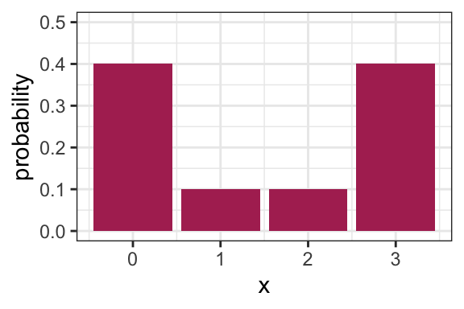
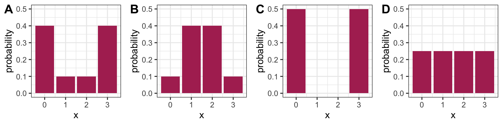
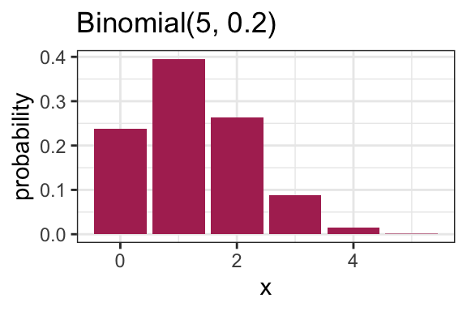

Lecture 2 Parametric families
September 11, 2019
2.1 Learning Objectives
- Identify probability as an expectation of a binary random variable.
- Calculate expectations of a linear combination of random variables.
- Match a physical process to a distribution family (Binomial, Geometric, Negative Binomial, Poisson, Bernoulli).
- Calculate probabilities, mean, and variance of a distribution belonging to a distribution family using either R or python.
- Distinguish between a family of distributions and a distribution.
- Identify whether a specification of parameters (such as mean and variance) is enough / too little / too much to specify a distribution from a family of distributions.
2.2 Properties of Distributions: Practice
Let’s practice some of the concepts from last time.
2.2.1 Demonstration: Example computation (8 min)
Let’s calculate the mean, variance, mode, and entropy of the following distribution (on the board).

2.2.2 Activity: Comparing Variance to Entropy (12 min)
True or false?
- Plot A has higher entropy than Plot B.
- Plot A has higher variance than Plot B.
- Plot C has the highest possible variance amongst distributions with support {0, 1, 2, 3}.
- Plot D has the highest possible entropy amongst distributions with support {0, 1, 2, 3}.

2.3 Expectations of Transformations
There are some properties of expectations that are particularly useful for some transformed random variables.
2.3.1 Linearity of Expectations (5 min)
Expectations can be calculated simply under linear transformations. If \(a\) is a constant and \(Y\) is another random variable, then:
- \(E[a X]=a E[X]\) (also true for standard deviation)
- \(E[X+Y]=E[X]+E[Y]\)
It does not mean \(E[XY]=E[X]E[Y]\) unless further assumptions are made; this is coming next week.
It also does not mean \(E(X^2)=E(X)^2\), for instance.
Example 1: The mean daily high temperature in Vancouver is 61 degrees Fahrenheit. What’s the mean temperature in Celcius? Remember, the conversion is \(C = 5/9(F − 32)\).
Example 3: You’ll see in DSCI 562 that sometimes it makes more sense to calculate the mean of a logarithm. Suppose \(E(\log(X)) = 1.5\). Is it true that \(E(X) = \exp(1.5) \approx 4.48\)?
2.3.2 Probability as an Expectation (3 min)
Machine learning techniques are typically built to calculate expectations. But what if you want to calculate a probability? Luckily, probability can be defined as an expectation! Specifically, if you want to find out the probability of some event \(A\), this is simply the expectation of the following binary random variable: \[ X = \begin{cases} 0 \text{ if } A \text{ does not happen}, \\ 1 \text{ if } A \text{ does happen} \end{cases} \] That is, \[P(A) = E(X).\]
2.4 Distribution Families
So far in our discussion of distributions, we’ve been talking about properties of distributions in general. Again, this is important because a huge component of data science is in attempting to describe an uncertain outcome, like the number of ships that arrive to the port of Vancouver on a given day, or the identity of a rock.
There are some common processes that give rise to probability distributions having a very specific form, and these distributions are very useful in practice.
Let’s use the Binomial family of distributions as an example.
2.4.1 Binomial Distribution (8 min)
Process: Suppose you play a game, and win with probability \(p\). Let \(X\) be the number of games you win after playing \(N\) games. \(X\) is said to have a Binomial distribution, written \(X \sim \text{Binomial} (N, p)\).
Example: (Demonstration on the board) Let’s derive the probability of winning exactly two games out of three. That is, \(P(X=2)\) when \(N=3\).
pmf: A binomial distribution is characterized by the following pmf: \[P(X=x) = {N \choose x} p^x (1-p)^{N-x}.\]
Remember, \(N \choose x\) is read as “N choose x”. You can think of it as the number of ways you can make a team of \(x\) people from a total of \(N\) people. You can calculate this in R with choose(N, x), and its formula is \[{N \choose x} = \frac{N!}{x!(N-x)!}.\]
mean: \(Np\)
variance: \(Np(1-p)\)
Code: The pmf can be calculated in R with dbinom(); in python, scipy.stats.binom.
Here is an example pmf for a Binomial(N = 5, p = 0.2) distribution:

2.4.2 Families vs. distributions (3 min)
Specifying a value for both \(p\) and \(N\) results in a unique Binomial distribution. For example, the Binomial(N = 5, p = 0.2) distribution is plotted above. It’s therefore helpful to remember that there are in fact many Binomial distributions (actually infinite), one for each choice of \(p\) and \(N\). We refer to the entire set of probability distributions as the Binomial family of distributions.
This means that it doesn’t actually make sense to talk about “the” Binomial distribution! This is important to remember as we add on concepts throughout MDS, such as the maximum likelihood estimator that you’ll see in a future course.
2.4.3 Parameters (5 min)
True or false:
- For a distribution with possible values {0, 1, 2, 3, 4, 5}, five probabilities need to be specified in order to fully describe the distribution.
- For a Binomial distribution with \(N=5\), five probabilities need to be specified in order to fully describe the distribution.
Knowing \(p\) and \(N\) is enough to know the entire distribution within the Binomial family. That is, no further information is needed – we know all \(N+1\) probabilities based on only two numbers! Since \(p\) and \(N\) fully specify a Binomial distribution, we call them parameters of the Binomial family, and we call the Binomial family a parametric family of distributions.
In general, a parameter is a variable whose specification narrows down the space of possible distributions (or to be even more general, the space of possible models).
2.4.4 Parameterization (8 min)
A Binomial distribution can be specified by knowing \(N\) and \(p\), but there are other ways we can specify the distribution. For instance, specifying the mean and variance is enough to specify a Binomial distribution.
Demonstration: Which Binomial distribution has mean 2 and variance 1? (on the whiteboard)
Exactly which variables we decide to use to identify a distribution within a family is called the family’s parameterization. So, the Binomial distribution is usually parameterized according to \(N\) and \(p\), but could also be parameterized in terms of the mean and variance. The “usual” parameterization of a distribution family is sometimes called the canonical parameterization.
In general, there are many ways in which a distribution family can be parameterized. The parameterization you use in practice will depend on the information you can more easily obtain.
2.4.5 Distribution Families in Practice
Why is it useful to know about distribution families?
In general when we’re modelling something, like river flow or next month’s net gains or the number of ships arriving at port tomorrow, you have the choice to make a distributional assumption or not. That is, do you want to declare the random variable of interest as belonging to a certain distribution family, or do you want to allow the random variable to have a fully general distribution? Both are good options depending on the scenario, and later in the program, we’ll explore the tradeoff with both options in more detail.
2.5 Common Distribution Families (12 min)
Aside from the Binomial family of distributions, there are many other families that come up in practice. Here are some of them. For a more complete list, check out Wikipedia’s list of probability distributions.
In practice, it’s rare to encounter situations that are exactly described by a distribution family, but distribution families still act as useful approximations.
Details about these distributions are specified abundantly online. My favourite resource is Wikipedia, which organizes a distribution family’s properties in a fairly consistent way – for example here is the page on the Binomial family. We won’t bother transcribing these details here, but instead focus on some highlights.
2.5.1 Geometric
Process: Suppose you play a game, and win with probability \(p\). Let \(X\) be the number of attempts at playing the game before experiencing a win. Then \(X\) is said to have a Geometric distribution.
Note:
- Sometimes this family is defined so that \(X\) includes the winning attempt. The properties of the distribution differ, so be sure to be deliberate about which one you use.
- Since there’s only one parameter, this means that if you know the mean, you also know the variance!
Code: The pmf can be calculated in R with dgeom(); in python, scipy.stats.geom.
2.5.2 Negative Binomial
Process: Suppose you play a game, and win with probability \(p\). Let \(X\) be the number of attempts at playing the game before experiencing \(k\) wins. Then \(X\) is said to have a Negative Binomial distribution.
- Two parameters.
- The Geometric family results with \(k=1\).
Code: The pmf can be calculated in R with dnb(); in python, scipy.stats.nbinom.
2.5.3 Poisson
Process: Suppose customers independently arrive at a store at some average rate. The total number of customers having arrived after a pre-specified length of time follows a Poisson distribution, and can be parameterized by a single parameter, usually the mean \(\lambda\).
A noteable property of this family is that the mean is equal to the variance.
Examples that are indicative of this process:
- The number of ships that arrive at the port of Vancouver in a given day.
- The number of emails you receive in a given day.
Code: The pmf can be calculated in R with dpois(); in python, scipy.stats.poisson.
2.5.4 Bernoulli
- A random variable that is either \(1\) (with probability \(p\)) or \(0\) (with probability \(1-p\)).
- Parameterized by \(p\).
- A special case of the Binomial family, with \(N=1\).